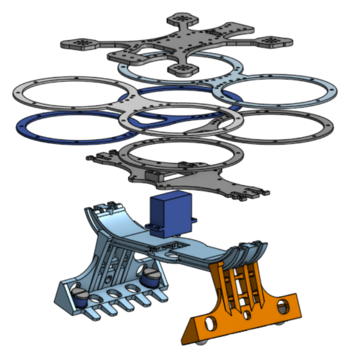
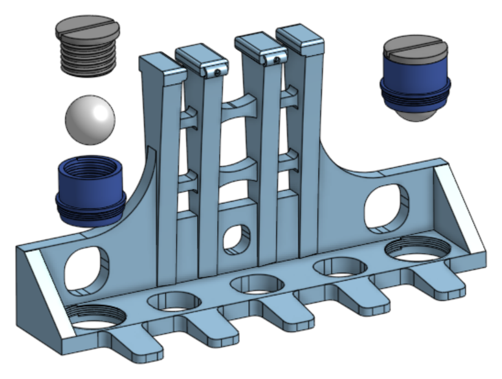
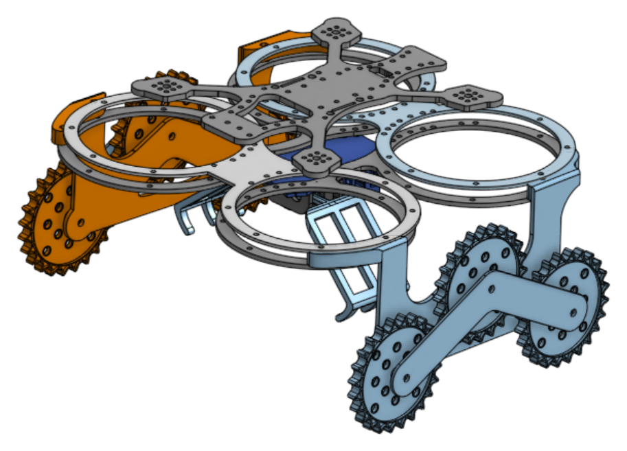

Competition drone
A drone that picks up a package by landing and rolling over it, built for the Technology Student Association drone challenge. The second build on the platform won the state competition.
- Role
- CAD and drawings for every custom part
- Team
- High school TSA team
- Tools
- Onshape, CNC carbon fiber, 3D printing, INAV
- Result
- State winner, 2026

The problem
The challenge was to pick up a package, carry it through an obstacle course and set it down. Hovering over a package to grab it blows it away with prop wash, and the whole drone had to fit an 18-inch go/no-go box at inspection.
Ground-roll pickup
Instead of grabbing from a hover, the drone lands and drives over the package.
- Ball-plunger casters. I designed printed ball plungers into the gripper base. On landing, the claws close just far enough for the casters to touch the ground, and light throttle input rolls the drone in any direction. The pilot drives over the package, the claws close on it and the drone takes off. Prop wash never hits the package from above.
- One motor, spring return. A single motor winds a steel cable onto a spool, pulling both claws closed along a curved track. Two springs mounted above the track reopen the claws when the motor releases.
- Curved track. The track curves upward at its ends, which narrows the drone's profile so it fits through tighter gaps in the obstacle course.
- Stable pickup platform. We switched the flight controller firmware to INAV for barometer altitude hold, which kept the drone steady while the pilot and claw operator worked the pickup.


Fabrication
The frame and prop guards are CNC-cut carbon fiber. The plungers and claws went through at least eight printed revisions on the school's printers before the final design. On this build every joint uses aluminum threaded inserts with steel screws, so printed parts can come apart and go back together without stripping.
The first build
The 2024–25 build proved the roll-over idea with motorized treads. The treads worked, but they made the drone far too heavy, their placement limited the claw until it was too weak, and the servos driving it sat on the prop guards, which caused problems of their own. That build also used cheaper components, and we paid for it in reliability.
The second build kept the concept and fixed the weaknesses: light passive casters in place of powered treads, one central motor-and-spring claw in place of guard-mounted servos, and better hardware throughout.

Result
The second build won the state competition. We qualified for nationals but withdrew after an electronic speed controller failed during testing.